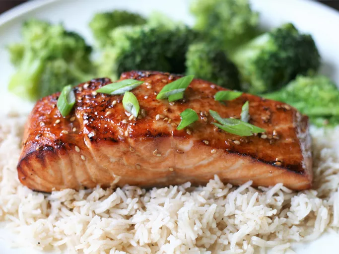

Teriyaki Salmon

Description
This recipe never fails to be a hit, whether we broil the salmon in the oven or grill it outdoors. Pair it with some homemade teriyaki fried rice to complete your meal.
Ingredients
- 1/4 cup sesame oil
- 1/4 cup lemon juice
- 1/4 cup soy sauce
- 2 tablespoons sesame seeds
- 1 teaspoon groupd mustard
- 1 teaspoon ground ginger
- 1/4 teaspoon garlic powder
- 4 (6 ounce) salmon steaks
Home